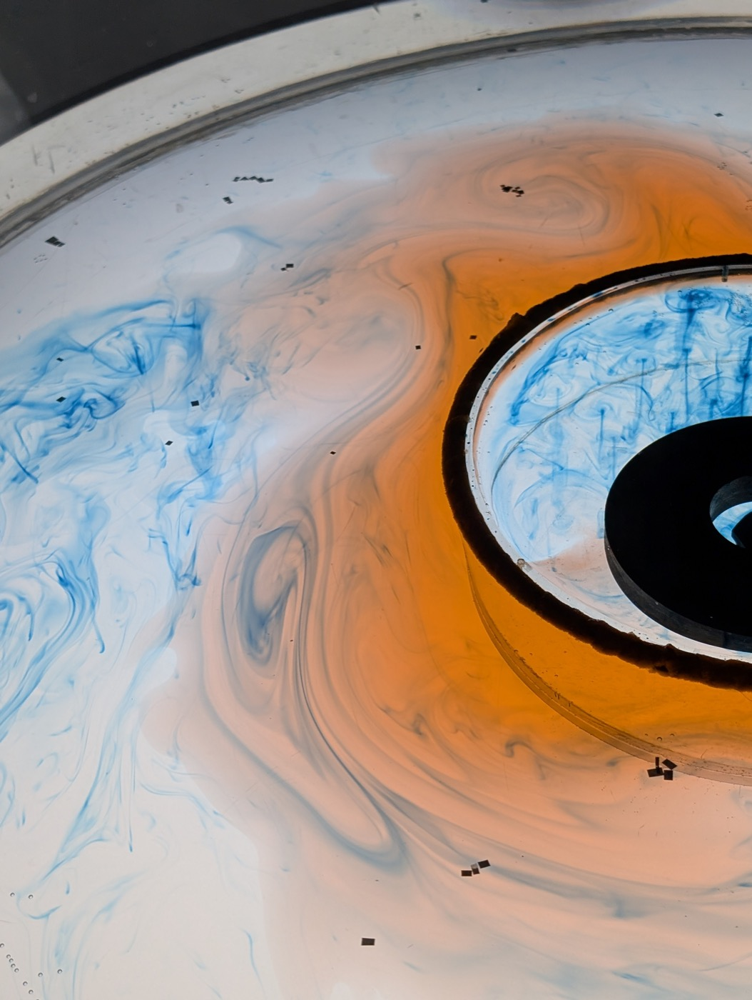

Summer school in Cambridge
Zomerschool in Cambridge
I just finished the Fluid Dynamics of Sustainability and the Environment summer school at the University of Cambridge, where we were hosted at Churchill College. Over two intense weeks we attended lectures, ran lab experiments and coded numerical experiments.
Ik heb zojuist de zomerschool Fluid Dynamics of Sustainability and the Environment aan de Universiteit van Cambridge afgerond, waar we te gast waren in Churchill College. In twee intensieve weken volgden we colleges, deden we laboratoriumexperimenten en programmeerden we numerieke experimenten.

It was great to meet so many peers and to broaden my knowledge beyond my coastal engineering background. Now back to my own PhD project!
Het was geweldig om zoveel vakgenoten te ontmoeten en mijn kennis te verbreden buiten mijn achtergrond in de kustwaterbouwkunde. Nu weer verder met mijn eigen promotieonderzoek!
← All posts← Alle berichten